いざ!番長
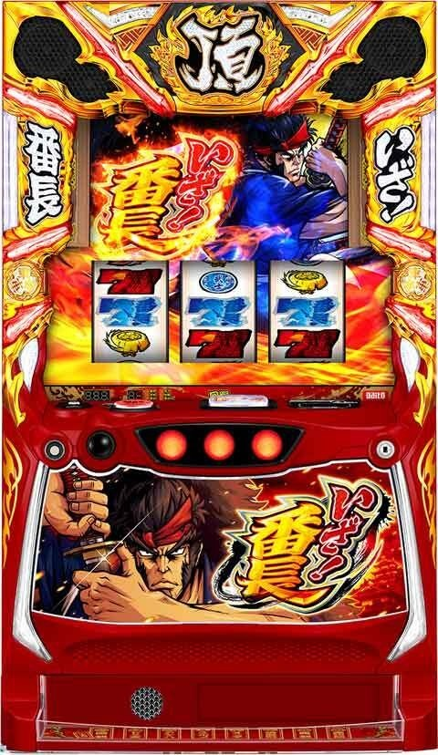
【天井情報】
通常時最大999G＋α消化でATに突入。
800Gハマり、900Gハマり時は御免ポイントを獲得。
朝イチリセット時はモードが「チャンスA以上」なので天井は600G＋αで天国移行率も25%と高め。
内部的にゲーム数加算抽選もあり。
御免ポイントは初期ポイントの振り分けが優遇され約30%で70pt以上からスタートする。
【リセット判別】
リセット時はゲーム数の内部加算あり。
【有利区間について】
有利区間切断条件 差枚プラス時に絶頂決戦突入で有利切れ濃厚
リセット時以外で有利区間をリセットすると「絶頂決戦」を経由して上位ATへ突入。
上位AT中はシームレスに継続するのでどこで有利区間を切っているのかは見た目上で分からないタイプ!?
狙い目
【リセット狙い】
200G
100Gゾーン狙い 55Gから
※リセット時はゲーム数の内部加算あり。
【ゲーム数天井狙い】
480G モード示唆でボーダー調整？
上位AT後 250G
※上位AT後かの判断はメニュー画面の履歴から確認。
【モード狙い】
修行移行ゲーム数でモード示唆あり
チャンスA濃厚 300Gから
チャンスB濃厚 当選まで
【アイキャッチ、浮世絵狙い】
アイキャッチ
剛剣 AT当選まで
刀 どの程度強い示唆か不明
浮世絵
龍 天国示唆？ AT当選まで
女性 チャンスB示唆？ AT当選まで？
雨 チャンスA示唆？ チャンスA想定でボーダー下げる？
【刀メーター狙い】
刀の色でボーダー調整。ptの目安は刀の鍔（つば）がリールより上に来ていれば70pt以上。
青 80pt 慎重派は単体で狙わず、ゾーンが絡む場合に打つ程度が良さそう。
黄 70pt
赤 10pt
【御免ポイント狙い】
蓄積量示唆中以上は解放まで。
蓄積量示唆小出現後に10pt以上獲得すれば解放まで？
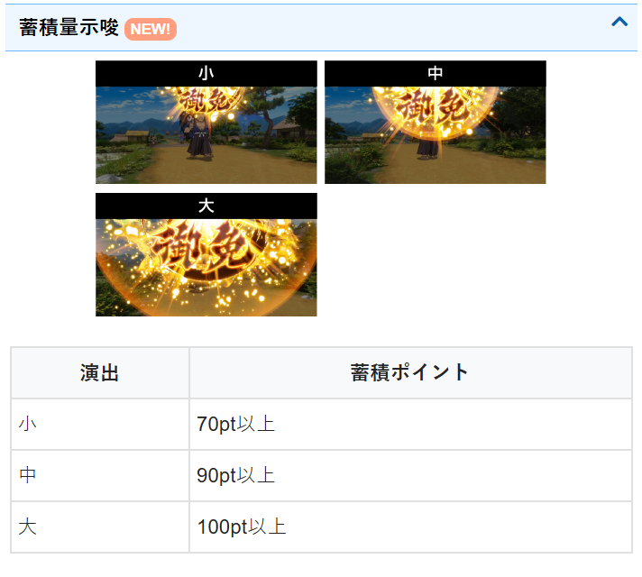
【有利区間関連狙い】
差枚+1500枚以上
上位AT後 AT当選まで？（天井短縮のため）。慎重に行くなら100ゾーンのみ、または200Gから。
下位AT後 100Gゾーンまで。刀メーターやモード示唆等で判断。
差枚+1000枚以上
上位後 100Gゾーンを80Gから。または250GからAT当選まで。
下位後 引き戻し確認まで。
※刀メーターの色やptでボーダー調整
※有利切れのタイミングは不明。差枚プラス時に絶頂決戦突入とか？
※有利切れ＝絶頂決戦のため、メニュー画面での絶頂決戦の履歴も確認しつつ差枚を確認する
差枚狙いについて
差枚プラスで絶頂決戦に突入し有利切れと考えると、上位AT後の差枚狙いが有効になりそう。
下位AT後だとゾーン狙いまでや刀メーターやモード示唆等で押し引きする感じ？
やめ時
AT後はゲーム数の色が緑、赤なら引き戻し確認。それ以外はやめ。
差枚が大きくプラスの場合は続行するケースがあるため、現差枚から有利区間関連狙いの項目に該当する場合は続行する。
上位AT終了後の引き戻し当選時は絶頂決戦に突入のため引き戻し確認は必須。
上位AT終了後のモードはチャンスA以上(天井600G)。
その他
絶頂決戦の履歴
メニュー画面の履歴から絶頂決戦突入（上位AT）の有無が確認出来る。
引き戻し履歴で、300枚以上（絶頂決戦）200枚以下（通常の引き戻し）が目安？
200-300枚はどちらか不明。
データ履歴だけでは絶頂決戦の履歴を確実に判断出来ない。
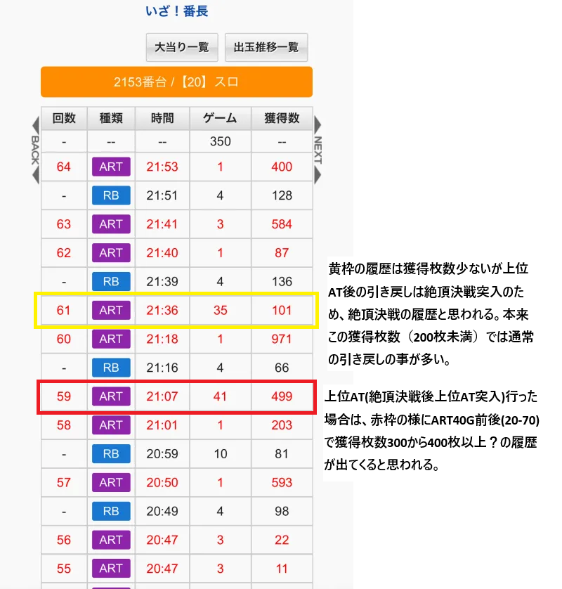
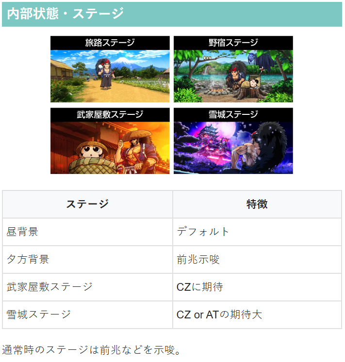
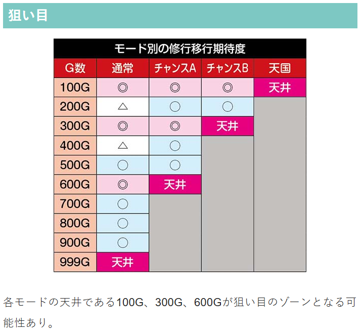
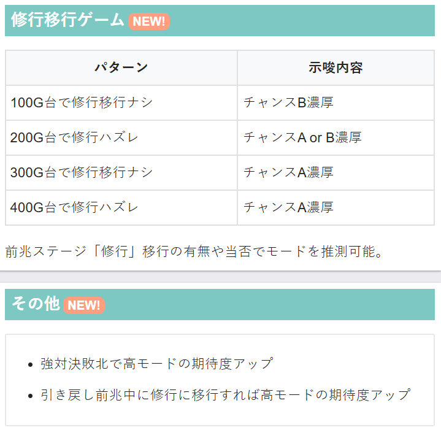
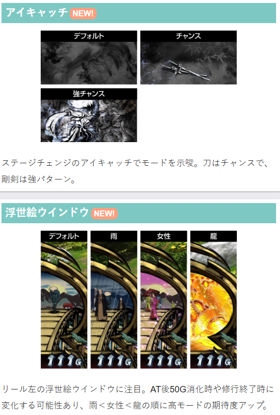
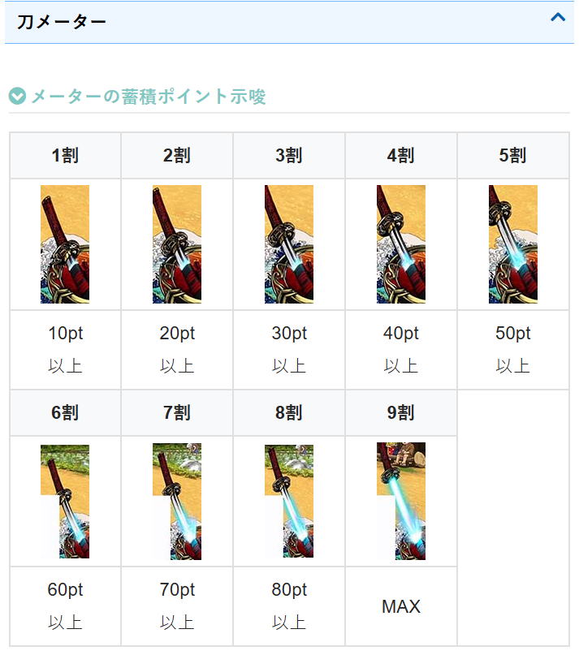
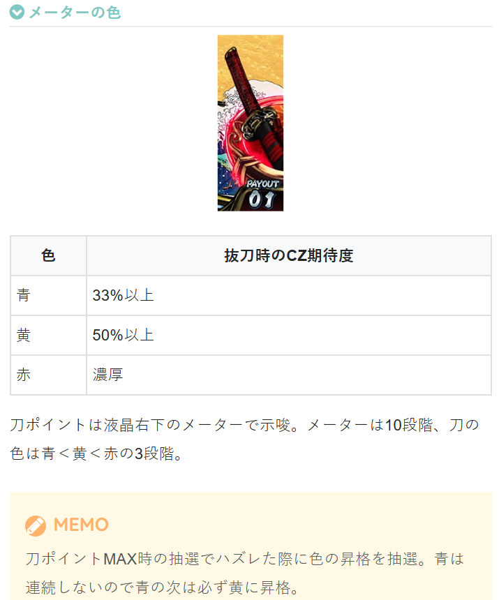
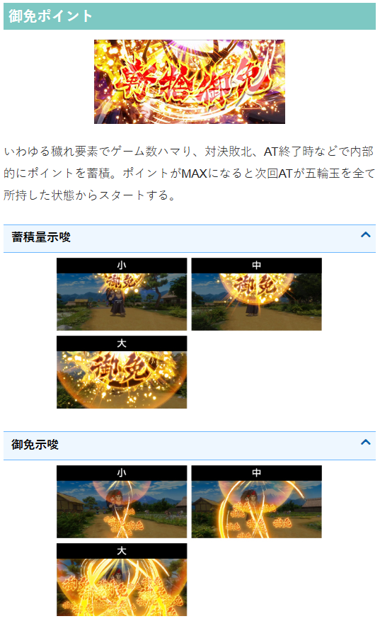
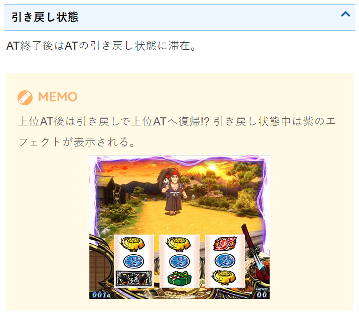
参考元
基本情報
- メーカー: サボハニ
- 機械割: 97.6% 〜 114.9%
- 導入開始日: 2025年06月02日（月）
- ゲーム性概要: ●ゲーム数消化やCZを契機に番長ボーナスやATに当選 ●ATは純増約2.8枚/Gの差枚数管理型 ●絶頂決戦後は純増約5.0枚/Gにパワーアップした上位ATへ！


打ち方
打ち方・小役
打ち方（小役狙い）
「最初に狙う絵柄」 左リール上段付近にBARを狙う。弁当箱停止時のみ、中＆右リールにも弁当箱を狙えばOKだ。

「弁当箱上段停止時」 中＆右リールにBARを目安に弁当箱を狙う。

「弁当箱中段停止時」 強弁当箱1確!?

「レア役の停止形（一例）」

※弁当箱斜め揃いでも強弁当箱の可能性あり
「共通ベルA」 共通ベルA（通常時、押し順ナビなし時は上段に揃う）確率に設定差が存在。 通常時の押し順ナビからのベル揃いや狙え発生時のベル揃いも共通ベルAなので、カウントは少し面倒だが、ダイトモを登録して遊技すればカウントしてくれる。

変則押しはNG
通常時、押し順ナビなし時は左リール第1停止での消化を推奨する。

左リール2連7狙い
「最初に狙う絵柄」 左リール枠上〜上段付近に2連7を狙う。2連7が枠内に止まればレア役濃厚だ。

「2連7上中段停止時」 弱チェリーor強チェリーorチャンス目or最強チェリー。中右リールはフリー打ちでOK。

「2連7中下段停止時」 弁当箱or斬揃いorチャンス目。 中リールに弁当箱を狙い、中段に弁当箱が止まったら右リールにも弁当箱を狙う（いずれもBAR目安でOK）。

「ベル上段停止時」 ハズレorリプレイor1枚ベルor10枚ベル。

左リールいざ狙い
「最初に狙う絵柄」 左リール枠上〜上段にいざを狙う。2連斬が中下段停止でリプレイ以上、いざが下段に止まれば強レア役濃厚となる。

「いざ上段停止時」 弁当箱orチャンス目。 中リールに弁当箱を狙い、中段に弁当箱が止まったら右リールにも弁当箱を狙おう。

「いざ中段停止時」 最強チェリー濃厚。4コマスベリ時のみ停止する。

「いざ下段停止時」 チャンス目or強チェリーor最強チェリー。 中＆右リールにいざを狙う。いざが下段に揃えば最強チェリー。

「2連斬中＆下段停止時」 リプレイor弱チェリー（強チェリー）or斬揃い。 右下がりリリベは基本的に弱チェリーなのだが、いざを左リール枠下にビタ押しした場合のみ、強チェリーでも止まることがある。

「ベル上段停止時」 ハズレor1枚ベルor10枚ベル。

解析情報通常時
小役関連
小役確率
| 役 | 確率 |
|---|---|
| 共通ベルA（上段） | 1/74.9（設定1） |
| 共通ベルB（斜め） | 1/15.3 |
| 弱チェリー | 1/79.9（設定1） |
| 弁当箱 | 1/89.9 |
| 共通斬揃い | 1/64.0 |
| 強レア役合算 | 1/299.3 |
| 最強チェリー | 1/16384.0 |
内部状態関連
斬高確率
弱チェリー・弁当箱成立時は刀ポイント獲得に加え、斬高確率への移行も抽選。滞在中は斜めベルとリプレイが約63%で斬揃いに変換されるため、刀ポイントが貯まりやすくなっている。 斬高確率中は刀の下に“斬高確率中”のエフェクトが出現する。

斬高確率性能
| 項目 | 内容 |
|---|---|
| 移行契機 | 弱チェリー、弁当箱の約20% |
| 消化中の抽選 | 斜めベル、リプレイの約63%を斬揃いに変換 |
| 斬揃い確率 | 1/7.8 |
モード
通常モード概要
通常時は4つのモードでAT当選までの規定ゲーム数（天井）が変化する。設定変更時は約25%で天国が選ばれるので朝イチはチャンスだ。800G、900G到達時は御免ポイントを必ず獲得する。
モードごとの天井ゲーム数
| モード | 天井 |
|---|---|
| 通常 | 999G |
| チャンスA | 600G＋α |
| チャンスB | 300G＋α |
| 天国 | 100G＋α |
CZ：ゲーム数契機のAT当選割合は約60%：約40%。
モードの選択期待度
| モード | 設定変更時 | 頂ズバッシュ 終了後 | 青頂ズバッシュ 終了後 |
|---|---|---|---|
| 通常 | ー | ◎ | ー |
| チャンスA | ◎ | ◎ | ◎ |
| チャンスB | ◯ | △ | ◯ |
| 天国 | 約25% | ◯ | ◯ |
※期待度…△＜◯＜◎
モードごとの修行（前兆）移行期待度
| ゲーム数 | 通常 | チャンスA | チャンスB | 天国 |
|---|---|---|---|---|
| 100G | ○ | ○ | ○ | 天井 |
| 200G | ▲ | △ | △ | |
| 300G | ○ | ○ | 天井 | |
| 400G | ▲ | △ | ||
| 500G | △ | △ | ||
| 600G | ○ | 天井 | ||
| 700G | △ | |||
| 800G | △ | |||
| 900G | △ | |||
| 999G | 天井 |
※期待度…▲＜△＜◯
刀ポイント
刀ポイント概要
通常時はベル・レア役・斬揃いで刀ポイントをためていき、ポイントがMAX（90pt獲得）に到達するとCZやATを抽選。強レア役はポイントMAX濃厚だ。 ポイントMAX時の刀の色（青＜黄＜赤）で期待度が変化する。

刀ポイント性能
| 項目 | 内容 |
|---|---|
| ポイント獲得契機 | ベル・レア役・斬揃い |
| ポイントMAX時 | CZ・AT抽選（AT中は決闘抽選） |
| 刀の色 | 青＜黄＜赤の順に期待度がアップ、 CZ・AT非当選時は色の昇格を抽選 |
「刀の色」 色は青＜黄＜赤の3段階で、黄と赤は刀の周りにオーラがあるので分かりやすい。 刀ポイントMAX→CZ・AT非当選時は色の昇格を抽選。青オーラでCZにもATにも当たらなかった場合、次は必ず黄以上になる。

「刀ポイントの蓄積量示唆」 抜刀が近づくほど多くポイントを獲得していることを示唆していて、最終的に抜刀すれば色に応じたCZ・AT抽選が受けられる。

役ごとの獲得ポイント
| 役 | ポイント |
|---|---|
| ベル揃い | 1pt |
| 斬揃い | 10pt以上 |
| 弱レア役 | 1pt以上 |
| 強レア役 | 90pt（MAX） |
色ごとの刀レベル示唆
| 色 | 示唆 |
|---|---|
| 青 | 全レベルの可能性あり |
| 黄 | レベル2以上濃厚 |
| 赤 | レベル3濃厚 |
※刀の色と刀レベルは完全リンクではない
刀レベル別・刀ポイントMAX時のCZ以上当選率 刀レベル1時
| 設定 | CZ当選 | AT当選 | トータル当選率 |
|---|---|---|---|
| 1 | 30.1% | 3.1% | 33.2% |
| 2 | 30.1% | 3.5% | 33.6% |
| 3 | 30.1% | 3.5% | 33.6% |
| 4 | 30.1% | 3.9% | 34.0% |
| 5 | 30.1% | 3.5% | 33.6% |
| 6 | 30.1% | 4.3% | 34.4% |
刀レベル2時
| 設定 | CZ当選 | AT当選 | トータル当選率 |
|---|---|---|---|
| 1 | 46.9% | 3.1% | 50.0% |
| 2 | 46.9% | 3.5% | 50.4% |
| 3 | 46.9% | 3.5% | 50.4% |
| 4 | 46.9% | 3.9% | 50.8% |
| 5 | 46.9% | 3.5% | 50.4% |
| 6 | 46.9% | 4.3% | 51.2% |
刀レベル3時
| 設定 | CZ当選 | AT当選 | トータル当選率 |
|---|---|---|---|
| 1 | 87.5% | 12.5% | 100% |
| 2 | 87.5% | 12.5% | 100% |
| 3 | 87.5% | 12.5% | 100% |
| 4 | 87.5% | 12.5% | 100% |
| 5 | 87.5% | 12.5% | 100% |
| 6 | 87.5% | 12.5% | 100% |
抜刀後、即対決や修行へ移行すればCZ以上期待度は60%オーバーとなる。
［刀ごとの保有ポイント示唆］

刀ポイントMAX→CZ＆AT非当選時の刀レベルアップ率
| 現在の刀レベル | レベル2へ | レベル3へ |
|---|---|---|
| レベル1 | 99.6% | 0.4% |
| レベル2 | 93.7% | 6.3% |
刀ポイントMAX→CZやAT非当選時に刀レベルの昇格を抽選。レベル1で非当選だった場合は必ず2以上へ昇格する。
刺客ゾーン（CZ）
刺客ゾーン概要
刀ポイントを契機に突入するCZ。10G＋α間、小役入賞で枠色を上げていき、最終的な色でATを抽選する。

刺客ゾーン性能
| 項目 | 内容 |
|---|---|
| 当選契機 | 刀ポイントMAX時の抽選 |
| 継続ゲーム数 | 10G＋α（ゲーム数消化後のハズレで終了） |
| AT期待度 | 約40% |
| 消化中の抽選 | 小役入賞で枠色が昇格、 レア役はCZゲーム数を3～10G延長 |
| その他 | AT当選後はレア役でATの初期枚数上乗せを抽選 |
枠色ごとのAT当選率
| 設定 | 白 | 青 | 黄 | 緑 | 赤 |
|---|---|---|---|---|---|
| 1 | 約25% | 1.0% | 10.0% | 約33% | 約80% |
| 2 | 約25% | ↓ | ↓ | 約33% | 約80% |
| 3 | 約25% | ↓ | ↓ | 約33% | 約80% |
| 4 | 約25% | ↓ | ↓ | 約33% | 約80% |
| 5 | 約25% | ↓ | ↓ | 約33% | 約80% |
| 6 | 約25% | 3.0% | 15.0% | 約33% | 約80% |
※虹はAT＋番長ボーナス濃厚
「枠色の昇格」 ナシ＜青＜黄＜緑＜赤＜虹の順に期待度がアップ。

「ラストは対決でATをジャッジ」 ゲーム数消化後のハズレで対決へ発展。 即、対決へ発展するパターンと、修行（前兆）を経由して対決へ発展するパターンの2通りが存在する。

御免ポイント
御免ポイント性能
| 項目 | 内容 |
|---|---|
| 獲得契機 | ゲーム数ハマリや対決敗北、AT終了時など |
| ポイントMAX時 | 次回AT開始時に五輪満状態からスタート |
※五輪満状態…5つすべての五輪玉を持った状態
ゲーム数ハマリや対決敗北、AT終了時などに獲得する可能性があるポイント。 獲得量がMAXになると、次回AT開始時にすべての五輪玉を持った状態でスタートする（五輪満状態）。
御免ポイント獲得＆蓄積示唆
| 示唆 | 示唆 | |
|---|---|---|
| 獲得示唆 | 弱 | 1pt以上獲得 |
| 獲得示唆 | 中 | 10pt以上獲得 |
| 獲得示唆 | 強 | 50pt以上獲得 |
| 蓄積示唆 | 弱 | 70pt以上保有 |
| 蓄積示唆 | 中 | 90pt以上保有 |
| 蓄積示唆 | 強 | 100pt以上保有 |
［獲得示唆］（上から弱・中・強）


［蓄積示唆］（上から弱・中・強）


獲得・蓄積示唆ともに複数のパターンが存在する。

直撃抽選
ハズレ目・ボーナス直撃確率
通常時はハズレ目でボーナスの直撃を抽選する。
解析情報ボーナス時
青頂ズバッシュ（上位AT）
青頂ズバッシュ概要
純増が約5.0枚/Gにアップした上位AT。基本的なゲーム性は頂ズバッシュと同じだが、レア役成立時の上乗せ当選率がアップかつ上乗せ時は100枚以上濃厚。さらに、決闘勝利時の報酬が青7以上濃厚となり、約25%で絶頂決戦を獲得できるのでかなり強力だ。

青頂ズバッシュ性能
| 項目 | 内容 |
|---|---|
| 突入契機 | 絶頂決戦～巌流島～消化後 |
| 1Gあたりの純増 | 約5.0枚 |
| 初期枚数 | 頂ズバッシュの残り分＋ 絶頂決戦での上乗せ分 |
| 消化中の抽選 | 枚数上乗せ、刀ポイント、決闘 |
| その他 | 決闘勝利時の報酬が青7以上濃厚、 約25%で絶頂決戦を獲得 |
［レア役］枚数上乗せ当選率
| 役 | 当選率 |
|---|---|
| 弱チェリー | 32.4% |
| 強チェリー | 上乗せ濃厚 |
| 最強チェリー | 上乗せ濃厚 |
| 弁当箱 | 12.8% |
| チャンス目 | 上乗せ濃厚 |
［レア役］上乗せ枚数詳細
| 上乗せ | 弱チェリー | 弁当箱 | 強チェリー チャンス目 | 最強チェリー |
|---|---|---|---|---|
| ＋20枚 | ー | ー | ー | ー |
| ＋30枚 | ー | ー | ー | ー |
| ＋50枚 | ー | ー | ー | ー |
| ＋100枚 | 31.4% | ー | 95.8% | ー |
| ＋200枚 | 1.0% | 10.8% | 3.2% | ー |
| ＋300枚 | ー | 2.0% | 1.0% | 100% |
［マダ三郎同行中の斬・いざ揃い］枚数上乗せ当選率
| 役 | 当選率 |
|---|---|
| 共通斬揃い | 上乗せ濃厚 |
| ナビ・狙え経由の斬揃い | 20.4% |
| ダブル斬揃い | 上乗せ濃厚 |
| いざ揃い | 上乗せ濃厚 |
［マダ三郎同行中の斬・いざ揃い］上乗せ枚数詳細
| 上乗せ | 共通斬揃い | ナビ・狙え 経由の斬揃い | ダブル斬揃い | いざ揃い |
|---|---|---|---|---|
| ＋20枚 | ー | ー | ー | ー |
| ＋30枚 | ー | ー | ー | ー |
| ＋50枚 | ー | ー | ー | ー |
| ＋100枚 | 99.4% | 20.4% | ー | ー |
| ＋200枚 | 0.6% | ー | 100% | ー |
| ＋300枚 | ー | ー | ー | 100% |
頂ズバッシュ（AT）
頂ズバッシュ概要
差枚数管理型のAT。レア役や刀ポイント契機の決闘に勝利することでボーナスに当選。レア役は枚数の直乗せ抽選もおこなわれる。

頂ズバッシュ性能
| 項目 | 内容 |
|---|---|
| 当選契機 | 規定ゲーム数到達、CZ成功 |
| 初期枚数 | 150枚＋α |
| 1Gあたりの純増 | 約2.8枚 |
| 消化中の抽選 | 枚数上乗せ（強レア役は上乗せ濃厚）、 刀ポイント、決闘（勝利でボーナス） |
「五輪玉」


五輪玉の性能
| 五輪玉 | 同行キャラ | 性能 |
|---|---|---|
| 煉玉 | チャピ衛門 | 上乗せ時に倍斬刀突入 |
| 疾玉 | サキ代 | いざor斬を狙え高確率 |
| 狂玉 | ノリ丸 | 決闘ゲーム数が3Gから4Gに増加 |
| 粛玉 | マダ三郎 | 斬揃いで上乗せのチャンス |
| 挽玉 | イワ兵衛 | 番長ボーナス超高確率＆ ボーナス当選まで枚数減算ストップ |
ATの性能をアップさせてくれるアイテムで、AT開始時は必ずいずれか一つを持ってスタート。AT中の共通ベル成立時に追加で獲得することもある。所持中の五輪玉はリール左に表示されていて、ボーナス当選で持っている五輪玉がリセット（再抽選）される。
「報酬アイコン」

アイコンごとの報酬の種類
| アイコン | 報酬 |
|---|---|
| 白ボーナス | 全報酬の可能性あり |
| 赤ボーナス | 約50%で青7以上 |
| 青7 | 青7以上 |
| 将軍 | 愛の教育的武士道以上 |
| 絶頂 | 絶頂決戦 |
※青7以上…青7or愛の教育的武士道or絶頂決戦
液晶右上には決闘勝利時に獲得できる恩恵が3つ目まで表示されている。 一番左のマスが次回勝利時の恩恵で、勝利後は2番目のマスが左にスライド、一番右のマスに新たな報酬が追加されていく。
AT中のステージ
| ステージ | 性能 |
|---|---|
| 中庭 | ● 斬揃い出現率：低 ● 大広間移行率：低 |
| 回廊 | ● 斬揃い出現率：中 ● 大広間移行率：高 |
| 大広間 | ● 斬揃い出現率：高 ● 斬揃い・レア役は 決闘濃厚、 強レア役は強決闘以上に期待 ● 滞在ゲーム数は10G＋α |
| 天守閣 | ● 決闘濃厚かつ、勝利で 愛の教育的武士道以上濃厚 |
AT中は20G経過ごとや弁当箱成立時にステージ移行が抽選され、滞在ステージごとに斬揃いの出現率や決闘当選率が変化。大広間へ行くまで下位のステージに転落することはない。 AT初当り時は100G以内に大広間に移行する。
弁当箱成立時・ステージ昇格率
| 滞在ステージ | 回廊へ | 大広間へ |
|---|---|---|
| 中庭 | 30.0% | 10.0% |
| 回廊 | ー | 40.0% |
［中庭］

［回廊］

［大広間］

［天守閣］

（ダブル）斬揃い・いざ揃いの合算確率
| ステージ | サキ代同行以外 | サキ代同行中 |
|---|---|---|
| 中庭 | 約1/54 | 約1/18 |
| 回廊 | 約1/47 | 約1/18 |
| 大広間 | 約1/33 | 約1/18 |
斬がダブルラインで揃うダブル斬揃いと、いざ揃いは決闘当選濃厚だ。
［中庭・回廊ステージ］ 刀ポイントMAX時・刀色ごとのCZ以上当選率
| 色 | 当選率 |
|---|---|
| 青 | 33%以上 |
| 黄 | 50%以上 |
| 赤 | 濃厚 |
［中庭・回廊ステージ］ レア役成立時の決闘当選率
| 役 | 当選率 |
|---|---|
| 弁当箱 | 0.1% |
| 弱チェリー | 25.0% |
| ダブル斬揃い | 濃厚 |
| いざ揃い | 濃厚 |
| 強レア役 | 刀ポイントMAX濃厚 |
| 最強チェリー | 濃厚 （確定決闘＆青7以上） |
強レア役は刀ポイントをMAXにするので、刀の色に応じて決闘を抽選する（約33〜100%）。 赤刀・弁当箱・ダブル斬揃いからの決闘は強決闘以上濃厚。いざ揃いと最強チェリー契機は確定決闘かつ、青7以上の報酬獲得が濃厚となる。
終了画面での抽選
AT終了画面のレア役では、決闘や絶頂決戦を抽選。AT中に一度も決闘に当選していない場合に限り、レア役以外でも約10%で決闘に当選する。

［AT・上位AT共通］終了画面・決闘（以上）当選率
| 役 | 当選率 |
|---|---|
| レア役以外 | 約10% （決闘に一度も当選していない場合のみ） |
| 弱チェリー・弁当箱・斬揃い | 決闘以上濃厚 |
| 強チェリー・強チャンス目 | 強決闘以上濃厚 |
| 最強チェリー | 絶頂決戦濃厚 |
［終了画面のシャッター］
終了画面のシャッターパターンでの示唆
| シャッター | 内容 |
|---|---|
| シャッターあり | シャッターが閉まれば決闘濃厚 |
| シャッターなし | 決闘濃厚 |
| 赤シャッター | 強決闘以上濃厚 |
終了画面の第3停止後に、シャッターが閉まれば決闘当選濃厚だ。
※抽選は青頂ズバッシュ終了画面でも有効
五輪玉の振り分け
| 五輪玉 | 振り分け |
|---|---|
| 狂玉 | 37.1% |
| 疾玉 | 37.1% |
| 煉玉 | 16.4% |
| 粛玉 | 8.2% |
| 挽玉 | 1.2% |
AT開始時・ボーナス終了時ともに、振り分けは共通。
枚数上乗せ時・倍斬刀チャレンジ当選率
| 煉玉 | 当選率 |
|---|---|
| なし | 4.0% |
| あり | 濃厚 |
頂ズバッシュ中・共通ベルでの五輪玉獲得率
| 五輪玉 | 獲得率 |
|---|---|
| 狂玉 | 2.41% |
| 疾玉 | 2.41% |
| 煉玉 | 0.46% |
| 粛玉 | 0.21% |
| 挽玉 | 0.06% |
| 五輪満状態へ | 0.01% |
| トータル | 5.56% |
すでに持っている五輪玉を獲得することはないので、保有数が多いほど獲得率は下がる。五輪満状態中は獲得抽選をしない。
［レア役］枚数上乗せ当選率
| 役 | 当選率 |
|---|---|
| 弱チェリー | 28.4% |
| 強チェリー | 上乗せ濃厚 |
| 最強チェリー | 上乗せ濃厚 |
| 弁当箱 | 6.7% |
| チャンス目 | 上乗せ濃厚 |
［レア役］上乗せ枚数詳細
| 上乗せ | 弱チェリー | 弁当箱 | 強チェリー チャンス目 | 最強チェリー |
|---|---|---|---|---|
| ＋20枚 | 25.4% | ー | ー | ー |
| ＋30枚 | 1.2% | ー | 93.4% | ー |
| ＋50枚 | 0.9% | ー | 3.0% | ー |
| ＋100枚 | 0.9% | 6.1% | 3.0% | ー |
| ＋200枚 | ー | 0.3% | 0.3% | 50.0% |
| ＋300枚 | ー | 0.3% | 0.3% | 50.0% |
［マダ三郎同行中の斬・いざ揃い］枚数上乗せ当選率
| 役 | 当選率 |
|---|---|
| 共通斬揃い | 上乗せ濃厚 |
| ナビ・狙え経由の斬揃い | 70.2% |
| ダブル斬揃い | 上乗せ濃厚 |
| いざ揃い | 上乗せ濃厚 |
［マダ三郎同行中の斬・いざ揃い］上乗せ枚数詳細
| 上乗せ | 共通斬揃い | ナビ・狙え 経由の斬揃い | ダブル斬揃い | いざ揃い |
|---|---|---|---|---|
| ＋20枚 | 69.6% | 57.0% | ー | ー |
| ＋30枚 | 22.7% | 11.3% | ー | ー |
| ＋50枚 | 5.1% | 1.3% | ー | ー |
| ＋100枚 | 2.6% | 0.6% | 100% | ー |
| ＋200枚 | ー | ー | ー | 100% |
| ＋300枚 | ー | ー | ー | ー |
報酬アイコン抽選
マスごとに報酬種別を抽選するが、白ボーナスが3連続で選ばれることはなく、10マス目は絶頂アイコン出現濃厚だ。

AT中の刀ポイント振り分け
| ポイント | ベル | 斬揃い | 弱レア役 | 強レア役 |
|---|---|---|---|---|
| 1pt | 100% | ー | 92.6% | ー |
| 10pt | ー | 69.9% | 6.3% | ー |
| 30pt | ー | 22.3% | 0.8% | ー |
| 50pt | ー | 6.3% | 0.4% | ー |
| 90pt | ー | 1.6% | ー | 100% |
倍斬刀チャレンジ
倍斬刀チャレンジ概要
AT中の枚数上乗せ後の一部で突入。3G以内に斬揃いorレア役を引けば、上乗せした枚数が2〜8倍のいずれかにアップする。 倍化成功時は倍斬刀チャレンジの継続を抽選。最初に上乗せした枚数が最大64倍になるまで、倍斬刀チャレンジが継続する可能性がある。

倍斬刀チャレンジ性能
| 項目 | 内容 |
|---|---|
| 突入契機 | 上乗せ当選時の一部、 煉玉あり時は上乗せで必ず突入 |
| 継続ゲーム数 | 3G |
| 消化中の抽選 | 斬揃い・レア役で上乗せ枚数を2～8倍にアップ |
| 特徴 | 消化中は上乗せ高確率となるため、 斜めベル・リプレイを斬揃いに変換 |
| 斬揃い・レア役合算 | 1/4.4 |
［倍斬刀チャレンジの継続］ 倍化成功後、「まだまだぁ！」のカットイン発生で倍斬刀チャレンジが継続する。


決闘
決闘概要
ボーナス当選をかけた3Gのバトル型CZ。決闘中は斬揃いの高確率となっていて、斬揃いやレア役を引けば50%以上で勝利となる。 継続ゲーム数は基本的に3Gだが、狂玉を持っている場合は4Gに延長。3G目・4G目の斬揃いやレア役は勝利濃厚だ。 勝利確定後のレア役では、報酬の格上げが抽選される。


決闘性能
| 項目 | 内容 |
|---|---|
| 突入契機 | レア役・刀ポイントMAX時の抽選 |
| 継続ゲーム数 | 3G（狂玉あり時は4G） |
| 消化中の抽選 | 全役で勝利抽選、 斬揃いとレア役は期待度50%以上、 3G目・4G目の斬揃いとレア役は勝利濃厚 |
| 特徴 | 決闘中は斬揃い高確率となるため、 斜めベル・リプレイを斬揃いに変換 |
| 斬揃い・レア役合算 | 1/4.4 |
| その他 | 決闘中は枚数の減算がストップ |
決闘の種類
決闘には、内部的に通常決闘＜強決闘＜確定決闘の3パターンが存在。確定決闘は発展した時点で勝利濃厚なので、報酬の昇格に期待できる。 決闘のパターンを正確に見抜くことはできないが、対戦相手によって強決闘（以上）である期待度が変化する。
強決闘・確定決闘の特徴
| 決闘 | 特徴 |
|---|---|
| 強決闘 | ● 斬揃い・レア役時の勝利期待度約80%（3G目以降は勝利濃厚） ● その他の役でも約20%で勝利 |
| 確定決闘 | ● 発展した時点で勝利濃厚（報酬昇格のチャンス） |
対戦相手ごとの強決闘以上期待度
| 対戦相手 | 期待度 |
|---|---|
| ドス吉 | 低 |
| アゲハ | ↓ |
| スルメ | ↓ |
| オニ平 | ↓ |
| 清麻呂 | 高 |
ドス吉・アゲハ・スルメの3人の期待度はほぼ共通。オニ平や清麻呂出現時が強決闘や確定決闘のチャンスとなる。
［対戦相手］

ボーナス
番長ボーナス概要
番長ボーナスは赤7と青7の2種類。いずれも消化中はATの枚数上乗せを抽選する。青7は20G間つねに上乗せ高確率状態となるため、期待度が高い。

番長ボーナス性能
| 項目 | 内容 |
|---|---|
| 突入契機 | 通常時の直撃抽選、通常時のCZ成功時の一部、決闘勝利時 |
| 継続ゲーム数 | 20G＋α |
| 消化中の抽選 | レア役・斬揃い・7揃いでATの枚数を上乗せ、 非レア役で上乗せ高確率移行抽選（赤7時のみ） |
| 上乗せ高確率中 | 斜めベル・リプレイを斬揃いに変換、 約1/40で7揃いが発生 |
| 斬揃い・レア役合算 | 約1/4.4（上乗せ高確率中） |
「告知タイプは3種類」 剛剣→チャンス告知、沢庵→完全告知、おみさ→最終告知の3種類。剛剣と沢庵は上乗せ当選のたびに告知が発生、おみさはラストでまとめて告知される。


「上乗せ高確率」 上乗せ高確率中はレア役合算確率が約1/4.4にアップする。

「7揃い」

番長ボーナス中・7揃い時の報酬
| 7揃い | 報酬 |
|---|---|
| 赤7揃い | ＋100枚以上 |
| 青7揃い | ＋200枚以上＋挽玉獲得 |
上乗せ高確率中の7揃い確率は約1/40。7揃いのフラグを引けば必ず狙えが発生して7が揃う。
超番長ボーナス概要
シリーズおなじみのプレミアムボーナス。50G間、番長ボーナスよりも優遇された数値でATの枚数上乗せ抽選がおこなわれる。 さらに、AT移行時に挽玉を獲得するので、番長ボーナス当選も濃厚だ。

超番長ボーナス性能
| 項目 | 内容 |
|---|---|
| 突入契機 | ロングフリーズ、強弁当箱成立時 |
| 継続ゲーム数 | 50G |
| 消化中の抽選 | レア役・斬揃い・7揃いでAT枚数を上乗せ |
| その他 | AT移行時に挽玉を獲得 |
確定画面の昇格抽選
内部的に赤7ボーナスの場合は青7ボーナスor絶頂決戦への、青7ボーナスの場合は絶頂決戦への昇格を抽選する。

ボーナス確定画面の昇格当選率 赤7ボーナス当選時
| 役 | 青7ボーナスへ | 絶頂決戦へ |
|---|---|---|
| ×？？時のベル揃い | 6.0% | ー |
| チェリー・弁当箱 | 10.0% | ー |
| 斬揃い | 10.0% | ー |
| 強チェリー・チャンス目 | 97.0% | 3.0% |
| 最強チェリー | ー | 濃厚 |
青7ボーナス当選時
| 役 | 絶頂決戦へ |
|---|---|
| ×？？時のベル揃い | 0.4% |
| チェリー・弁当箱 | 1.0% |
| 斬揃い | 1.0% |
| 強チェリー・チャンス目 | 10.0% |
| 最強チェリー | 濃厚 |
赤7ボーナス中・上乗せ高確当選率
| 役 | 高確1回目 | 高確2回目以降 |
|---|---|---|
| ハズレ目 | 1.5% | 0.4% |
| ベル | 10.3% | 2.9% |
| リプレイ | 10.3% | 2.9% |
※青7ボーナス中はつねに上乗せ高確
1回目の高確は当選率が高い。
上乗せ枚数振り分け
| 上乗せ | 弱チェリー | 強チェリー | 弁当箱 |
|---|---|---|---|
| ＋20枚 | 97.7% | ー | 97.7% |
| ＋30枚 | 1.6% | ー | 1.6% |
| ＋50枚 | 0.4% | 75.0% | 0.4% |
| ＋100枚 | 0.4% | 23.8% | 0.4% |
| ＋200枚 | ー | 0.8% | ー |
| ＋300枚 | ー | 0.4% | ー |
| 上乗せ | チャンス目 | 斬揃い | ダブル斬揃い |
| ＋20枚 | ー | 97.7% | ー |
| ＋30枚 | ー | 1.6% | ー |
| ＋50枚 | 75.0% | 0.4% | 97.3% |
| ＋100枚 | 23.8% | 0.4% | 1.6% |
| ＋200枚 | 0.8% | ー | 0.8% |
| ＋300枚 | 0.4% | ー | 0.4% |
| 上乗せ | いざ揃い | 赤7揃い | 青7揃い |
| ＋20枚 | ー | ー | ー |
| ＋30枚 | ー | ー | ー |
| ＋50枚 | ー | ー | ー |
| ＋100枚 | ー | 98.8% | ー |
| ＋200枚 | 75.0% | 0.8% | 75.0% |
| ＋300枚 | 25.0% | 0.4% | 25.0% |
※最強チェリーは＋300枚濃厚 振り分けは赤7・青7ボーナス共通
愛の教育的武士道
愛の教育的武士道概要
絶頂決戦当選の期待大となる、高期待度のチャンスゾーン。突入した時点でボーナスは濃厚で、対決が継続するほど報酬の期待度がアップしていく。 対決は最大5戦あり、1戦目は継続濃厚。5戦目到達で絶頂決戦濃厚だ。

愛の教育的武士道性能
| 項目 | 内容 |
|---|---|
| 突入契機 | 決闘勝利時の一部 |
| 消化中の抽選 | 突入した時点でボーナス以上濃厚、 対決が継続するほど期待度アップ |
| 継続抽選 | 対決中の小役で継続を抽選（1戦目は継続濃厚） |
対決継続数ごとの恩恵・絶頂決戦期待度
| 継続回数 | 報酬 | 絶頂決戦期待度 |
|---|---|---|
| 2戦目まで | 赤7以上 | 低 |
| 3戦目まで | 赤7以上 | チャンス |
| 4戦目まで | 青7以上 | 大チャンス |
| 5戦目到達 | 絶頂決戦濃厚 |
［継続するほどチャンス］


「絶頂ジャッジメント」 継続回数に応じて報酬の種類をジャッジしていて、内部的に失敗時は消化中の小役で書き換えを抽選。演出成功で絶頂決戦へ、失敗時はボーナスへ移行する。


アイコン色ごとの成功期待度
| 色 | 頂ズバッシュ中 | 青頂ズバッシュ中 |
|---|---|---|
| 黄 | 約15% | － |
| 緑 | 約33% | 約70% |
| 赤 | 約75% | 約90% |
| 虹 | 100% | 100% |
内部的に失敗時の成功書き換え当選率
| 役 | 1G目 | 2G目 |
|---|---|---|
| 弱チェリー・弁当箱・斬揃い | 約50% | 100% |
| 強チェリー・強チャンス目 | 100% | 100% |
対決継続ごとにアイコンの色が昇格していき、最終的な色によって絶頂ジャッジメントの成功（絶頂決戦当選）期待度が変化。 内部的に失敗の場合はレア役で成功への書き換えを抽選、内部的に成功確定後のレア役・斬揃いでは、次の対決の継続権利を獲得する。
絶頂決戦〜巌流島〜（絶頂決戦）
絶頂決戦〜巌流島〜概要
平均700枚の上乗せに期待できる本機最強特化ゾーン。絶頂終了後は必ず青頂ズバッシュへ突入する。

絶頂決戦～巌流島～性能
| 項目 | 内容 |
|---|---|
| 突入契機 | 決闘勝利時の一部、愛の教育的武士道の一部、 青頂ズバッシュ終了後の引き戻し抽選当選時 |
| 消化中の抽選 | 剛剣が先制すれば上乗せ発生、 1セット内の攻撃（上乗せ）回数は2～9回 |
| 継続保障 | 2セットの継続保障あり |
| 追撃 | 攻撃時に追撃抽選あり（3パターン） |
| 終了契機 | 鏡の攻撃が発生すると終了のピンチ （レア役で勝利書き換え抽選あり） |
| その他 | 楽曲がミーモ斬シングに変化すれば 当該セット継続＋3セット以上継続濃厚 |
「先制キャラ決定」 鏡と剛剣の競り合いで先制するキャラを決定。剛剣が先制なら上乗せ濃厚で、1セットの攻撃回数は2・3・5・7・9回のいずれか（2〜9回の上乗せで1セット）。鏡が先制すると終了のピンチだ。 突入時は2セットの継続保障があるので、最低2回先制（最低4回の上乗せが発生）するまでは終了しない。

「追撃」

追撃の内容
| 追撃 | 内容 |
|---|---|
| 剛剣 | 弱：30枚以上 中：50枚以上 強：100枚以上 |
| 小太郎 | ふすまが閉じた回数で上乗せを告知（50枚以上） |
| 鏡 | リールアクションで上乗せを告知（100枚以上） |
攻撃時の一部で追撃が発生。追撃に登場するキャラで上乗せ期待度が異なる。
敗北時の勝利書き換え抽選
鏡が先制すると終了のピンチ。鏡先制＝必ず敗北というわけではなく、逆転演出が発生して継続するパターンもアリ。 内部的に敗北している場合はレア役で勝利（継続）への書き換えを抽選する。

内部的に敗北時・勝利書き換え当選率
| 役 | 敗北時 | 継続確定後 |
|---|---|---|
| 弱チェリー・弁当箱 | 約50% | 約50%で追撃獲得 |
| 斬揃い | 100% | 約50%で追撃獲得 |
| 強チェリー・強チャンス目 | 100%＋追撃獲得 |
レア役・斬揃いで継続を抽選。継続確定後は追撃の権利獲得を抽選する。 強レア役は継続＋追撃も濃厚だ。
引き戻し状態
引き戻し状態解説
AT終了後は一定ゲーム数間、ATの引き戻し状態に滞在。 青頂ズバッシュ終了後に引き戻しに当選した場合、絶頂決戦に当選する（青頂ズバッシュへ復帰）。
［青頂ズバッシュ終了後は液晶枠が紫に帯電］ 引き戻し状態の継続ゲーム数等は調査中だが、青頂ズバッシュ終了後は帯電がなくなるまでは打っておきたい。

演出情報
通常時
ステージの示唆
| ステージ | 示唆 |
|---|---|
| 昼 | デフォルト |
| 夕方 | 前兆示唆 |
| 武家屋敷 | CZ当選に期待 |
| 雪城 | CZ・AT当選の大チャンス |
［昼］

［夕方］

［武家屋敷］

［雪城］

対決（連続演出）
シリーズおなじみのジャッジ演出で、対戦相手と対決の種類で期待度が変化する。 本作では新たにストーリー演出が搭載されていて、発展すれば大チャンスだ。

対決の種類
| 対戦相手 | 弱対決 | 中対決 | 強対決 |
|---|---|---|---|
| スルメ | 寺子屋 | 歌舞伎 | お宿 |
| アゲハ | 歌舞伎 | 寺子屋 | みこし |
| ドス吉 | みこし | お宿 | 歌舞伎 |
| オニ平 | ー | みこし | ー |
| 清麻呂 | ー | ー | ー |
ストーリーの種類
| 対戦相手 | ストーリー |
|---|---|
| オニ平 | 迫りくる十手 |
| 清麻呂 | 腹黒い白塗り |
対決は弱＜中＜強の順に期待度がアップ。 VSオニ平は中対決orストーリー、VS清麻呂はストーリーのみが存在する。
［迫りくる十手］


［腹黒い白塗り］ ストーリー単体での期待度は迫りくる十手＜腹黒い白塗り。


修行移行ゲームによるモード示唆
| ゲーム数 | 示唆 |
|---|---|
| 100G台 | 修行移行ナシならチャンスB濃厚 |
| 200G台 | フェイク修行へ移行でチャンスAorチャンスB濃厚 |
| 300G台 | 修行移行ナシならチャンスA濃厚 |
| 400G台 | フェイク修行へ移行でチャンスA濃厚 |
※ゲーム数契機で移行した修行のみが対象（CZ後などの修行は含めない）
モード示唆演出
| 演出 | 示唆 |
|---|---|
| ステージチェンジ | ● 黒いもや：デフォルト ● 刀：チャンスA以上示唆 ● 剛剣： チャンスB以上濃厚 |
| 浮世絵ウインドウ | ● 晴れ：デフォルト ● 雨：チャンスA以上示唆 ● 女性：チャンスB以上濃厚 ● 龍： 天国濃厚 |
| 強対決 | ● 敗北でチャンスA以上濃厚 |
| 引き戻し状態中 | ● 修行移行で高モードの期待度アップ |
| リプレイフラッシュ | ● リール全体が2回暗転：チャンスA以上示唆 ● リール全体が市松状にフラッシュ： 天国濃厚 |
［ステージチェンジ］

［浮世絵ウインドウ］ AT終了後50G消化時や、修行終了後にウインドウが変化する可能性がある。

ボーナス当選時や確定役成立時の演出振り分け
| 演出 | ボーナス 当選時 | 最強チェリー 成立時 | 強弁当箱 成立時 |
|---|---|---|---|
| 突風演出 | 5.3% | 2.7% | 2.5% |
| キャラクター登場演出 | 12.4% | 2.7% | 2.5% |
| 舎弟引っ張り演出 | 5.3% | 2.7% | 2.5% |
| 小太郎思ひ出演出 | 5.3% | 4.4% | 5.0% |
| 達人の技演出 | 5.3% | 3.2% | 3.0% |
| 武士道演出 | 1.6% | 8.4% | 10.0% |
| 花魁お色気演出 | 1.2% | 11.4% | 12.5% |
| シャッターステージチェンジ | 20.5% | 37.3% | ー |
| 駕籠演出 | 5.3% | 4.2% | 3.5% |
| おとっつぁん演出 | 11.9% | 7.0% | 6.5% |
| 消灯演出 | 15.1% | ー | ー |
| 刀鍛冶演出 | 5.3% | 3.2% | 3.5% |
| 地蔵参り演出 | 2.7% | 1.7% | 1.8% |
| 食料調達演出 | 2.7% | 1.7% | 1.8% |
| タイトルカットイン | ー | 9.3% | 45.0% |
ボーナス本前兆中のレア役では、通常時と同様に刀ポイント獲得を抽選。最強チェリー成立時は上乗せ150枚＋挽玉を獲得できる。
前兆
修行
シリーズおなじみの前兆ステージ。さまざまな演出で本前兆期待度を示唆する。

修行中の演出法則・期待度
| 演出 | 法則・期待度 | |
|---|---|---|
| 滞在ゲーム数 | 10G以下 | 本前兆濃厚 |
| 滞在ゲーム数 | 11G | チャンス |
| 滞在ゲーム数 | 12～15G | デフォルト |
| 滞在ゲーム数 | 16G | チャンス |
| 滞在ゲーム数 | 17G | 本前兆濃厚 |
| 漬物石演出 | ナシ | 約75% |
| 漬物石演出 | だるま | 期待度：低 |
| 漬物石演出 | たぬき | 期待度：中 |
| 漬物石演出 | まねきねこ | 約75% |
| 石像掘り演出 | おりん＋ベル否定 | 中対決以上 |
| 石像掘り演出 | おりん＋リプレイ | 大チャンス |
| 石像掘り演出 | シャッター中 | チャンス |
| 石像掘り演出 | シャッター大 | 大チャンス |
| たくあん かじり演出 | 第3停止時漬物石落下 | 大チャンス |
| たくあん かじり演出 | リプレイorベル時に漬物石落下 | 大チャンス |
| たくあん かじり演出 | まねきねこがある状態で発生 | 本前兆or 最強チェリー |
| 小太郎探索演出 | あおり発生＋小役否定 | デフォルト |
| 小太郎探索演出 | あおり＋小役＋小太郎探索へ | チャンス |
| 小太郎探索演出 | 探索後、何も持ち帰らない | 大チャンス |
| 小太郎探索演出 | 2回探索へ行き、2回漬物石 | 大チャンス |
| 小太郎探索演出 | 1Gで帰還＋小町以外 | 大チャンス |
| 小太郎探索演出 | 1Gで帰還or5G以上探索 | チャンス |
［漬物石演出：だるま］

［漬物石演出：たぬき］

［漬物石演出：まねきねこ］

［石像掘り演出］

［たくあんかじり演出］

［小太郎探索演出］

刺客ゾーン（CZ）
枠色別・発展先ごとの期待度
| 枠色 | 法則 |
|---|---|
| 白 | 修行移行で期待度約85% |
| 青 | 修行移行で 勝利濃厚 |
| 黄 | 修行移行で期待度約65% |
| 緑 | 対決発展で期待度約90% |
| 赤 | 対決発展で 勝利濃厚 |
| 色不問 | 対決敗北→修行移行で 勝利濃厚 |
白・青・黄は即対決発展がデフォルト、緑と赤は修行を経由しての対決発展がデフォルト。矛盾すれば期待度が大幅にアップする。
発展時の演出パターン
レバーON時の人影演出“以外”で発展すれば 勝利濃厚 （武士道演出、リール回転開始時の人影演出などが該当）
頂ズバッシュ（AT）
頂ズバッシュ中の楽曲変化条件と変化楽曲
| 条件 | 楽曲 |
|---|---|
| 挽玉獲得時（五輪満中含む） | 轟けDREAM～操Version～ |
| 一撃300枚以上の上乗せ獲得時 | 月紅（新曲） |
| 番長ボーナス中のAT復帰時に 挽玉を獲得した時の一部 | 初代番長の楽曲 |
一撃300枚以上の上乗せに関しては、AT中・番長ボーナス中のどちらで上乗せした場合でも有効だが、AT開始前に突入した番長ボーナスで上乗せした場合は楽曲変化の対象とならない。
上乗せ系の演出法則（前兆中を除く）
| 演出 | 法則 | |
|---|---|---|
| 舎弟 吹っ飛び演出 | ロングパターン （※） | 上乗せor決闘濃厚 |
| 舎弟 吹っ飛び演出 | 小町出現 | 上乗せor決闘濃厚 |
| 舎弟 吹っ飛び演出 | 鉄斎出現 | ＋300枚or確定決闘濃厚 |
| BET突き演出 | パターン | 弱・中・強・最強の4種類 |
| BET突き演出 | 中＋弁当箱否定 | 上乗せ濃厚 |
| BET突き演出 | 強 | ＋50枚以上濃厚 （50枚なら倍斬刀濃厚） |
| BET突き演出 | 最強 | ＋300枚濃厚 |
| BET突き演出 | 大広間滞在中 | 上乗せ濃厚 |
| BET突き演出 | 大広間＋弱 | ＋300枚濃厚 |
| 御庭番衆 参上演出 | レア役成立 | 上乗せor決闘濃厚 |
| 御庭番衆 参上演出 | 同行キャラ 以外のキャラ | ＋100枚以上or 対象キャラの五輪玉追加 |
| 御庭番衆 参上演出 | 赤好機 | ＋100枚以上濃厚 |
※いつもより舎弟が吹っ飛んでいる時間が長い
［BET突き演出］

［御庭番衆参上演出］

強決闘以上に期待できる演出
| 演出 | 法則 | |
|---|---|---|
| 決闘の相手 | オニ平 | 強決闘以上期待度50%超 |
| 決闘の相手 | 清麻呂 | 強決闘以上濃厚、 確定決闘期待度50%超 |
| 決闘の相手 | 2連続で 同じ相手 | 強決闘以上濃厚 |
| 武器庫パンダ演出 | 親子 | 強決闘以上濃厚 |
| 舎弟吹っ飛び演出 | 強パターン （竜虎の襖） | レア役否定で 強決闘以上濃厚 |
| ベルゲット演出 | 強パターン | 確定決闘濃厚 |
| 兵糧演出 | 強パターン | 強決闘以上濃厚 |
| 武士道演出 | 強決闘以上濃厚 | |
| シャッターステージチェンジ演出 | 強決闘以上濃厚 | |
| 城門ステージチェンジ演出 | 強決闘以上濃厚 | |
| 小太郎探索演出 | 5G | 強決闘以上濃厚 |
| 小太郎探索演出 | 6G | 確定決闘濃厚 |
| ご乱心チャレンジ | 通常パターン | 強決闘以上期待度50%超 |
| ご乱心チャレンジ | チャンス分岐 | 強決闘以上濃厚 |
| 御庭番衆参上演出 | 同行キャラ以外 ＋チャンスアップ | 強決闘以上濃厚 |
| 御庭番衆参上演出 | チャンスアップ 2回発生 | 強決闘以上濃厚 |
| 御庭番衆参上演出 | イワ兵衛 | 強決闘以上濃厚 |
| 御庭番衆参上演出 | イワ兵衛＋ チャンスアップ | 確定決闘濃厚 |
| 鬼瓦演出 | チャンスアップ 2回発生 | 強決闘以上濃厚 |
| 刀ルーレット演出 | 3G連続 | 強決闘以上濃厚 |
| 刀ルーレット演出 | 大広間で継続 | 強決闘以上濃厚 |
| 刀ルーレット演出 | 赤決闘 | 強決闘以上濃厚 |
※清麻呂は勝利で青7以上 ※武器庫パンダ演出～刀ルーレット演出は決闘発展時に発生した場合の法則
［武器庫パンダ演出：親子］

［ベルゲット演出：強パターン］

［兵糧演出：強パターン］

［武士道演出］

［御庭番衆参上演出：チャンスアップ］

［鬼瓦演出：チャンスアップ］

倍斬刀チャレンジ中の演出法則
| 演出 | 法則 |
|---|---|
| ロングウエイト | 倍化濃厚 |
| 赤背景 | 倍化濃厚 |
| 黒ナビ | 倍化濃厚 |
| 紫ナビ | 4倍以上 （2倍なら継続濃厚） |
| いざざざ狙え | 倍化後の上乗せ枚数が100枚以上 （シングル斬揃い時は継続濃厚） |
| 20枚時にいざざざ狙え | いざ揃い濃厚 |
［大広間ステージ以外］刀ガタガタ演出の法則
| 項目 | 法則 |
|---|---|
| 成立役 | ● ベル・斬揃い・レア役濃厚 |
| 刀ガタガタ 発生時 | ● レバーON時にベルゲット演出発生→レア役成立＝ 上乗せ濃厚 （リール回転開始時の発生がデフォルト） |
| 刀ガタガタ 発生時 | ● リール回転開始時に演出ナシ→第1停止時に演出発生で 上乗せ濃厚 |
| 刀ガタガタ 発生時 | ● 御庭番衆参上演出は 五輪玉獲得or上乗せor決闘濃厚 |
| 刀ガタガタ 発生時 | ● 決闘前兆中なら演出不問で 上乗せ濃厚 |
| 刀ガタガタ 発生時 | ● いざor斬狙えは いざ揃いorダブル斬揃い濃厚 |
［大広間ステージ］刀ガタガタ演出の法則
| 項目 | 法則 |
|---|---|
| 成立役 | ● 共通ベル成立時は刀ガタガタ発生濃厚 |
| 刀ガタガタ 発生時 | ● 大広間終了あおり演出発生で 斬揃い濃厚 |
| 刀ガタガタ 非発生時 | ● 舎弟吹っ飛び演出発生で 斬揃い以上濃厚 |
| 刀ガタガタ 非発生時 | ● 武器庫パンダ演出発生時にベル・レア役のダブルナビなら レア役濃厚 |
※大広間ステージ中のレア役・斬揃いは決闘濃厚
将軍フラッシュの法則
| パターン | 法則 |
|---|---|
| 不問 | 発生した時点で決闘以上濃厚 |
| 弱パターン | 愛の教育的武士道期待度80%以上＆強決闘期待度アップ |
| 強パターン | 決闘に勝利すれば 愛の教育的武士道濃厚 |
| 天守閣中の 強パターン | 確定決闘濃厚 |
※将軍フラッシュ…液晶上に将軍のフラッシュが発生
決闘勝利期待度
| 演出 | 期待度 | |
|---|---|---|
| 予告音 | 約70% | |
| 第3停止時赤カットイン | 勝利濃厚 | |
| その他 チャンスアップ | トータル | 約75% |
| その他 チャンスアップ | 2回発生 | 勝利濃厚 |
| その他 チャンスアップ | 3or4G目に発生 | 勝利濃厚 |
その他チャンスアップの種類
| ゲーム数 | チャンスアップ | |
|---|---|---|
| 1G目 | レバーON時 | 赤タイトル |
| 1G目 | 第3停止後 | 剛剣のオーラ付き構え |
| 2G目 | レバーON時 | 月が赤い |
| 3or4G目 | リール停止時 | 剛剣の顔アップ |
| 3or4G目 | 第3停止後 | 赤背景 |
チャンスアップ発生回数の法則
| 回数 | 法則 |
|---|---|
| 3G連続で発生 | 青7ボーナス以上濃厚 |
| 3・4G目に発生して敗北 | 復活＋青7ボーナス以上濃厚 |
［第3停止時赤カットイン］

成立フラグごとの残揃い変換時に揃うライン
| 成立フラグ | ライン |
|---|---|
| リプレイ | 右上がり斬揃い |
| 共通ベル | 中段斬揃いor右リールにいざ・斬・斬停止 |
セグ表示発生率
| 成立フラグ | 発生率 |
|---|---|
| リプレイ | 50.0% |
| 共通ベル | − |
セグ＋押し順ナビの法則
セグなしかつリプレイ成立時は、いざ・斬・斬を狙えが発生
セグありかつリプレイ成立時は、約80%で左リールが最終停止になる →3・2・1や3・1・2ナビは斬揃いの期待度がアップ
セグなしかつ共通ベル成立時は、押し順ナビ発生で斬 揃い濃厚
リプレイや共通ベルを斬揃いに変換した場合、斬が揃うラインでどちらのフラグが成立しているかを判別できる。
ボーナス
番長ボーナス中の隠しモード
告知タイプ選択画面で、十字キーの左右ボタンを押すと隠しモードに変更可能（家紋ランプ点灯で選択成功）。もう一度左右キーを押せばノーマルモードへ戻る。

隠しモードの特徴
| 告知タイプ | 特徴 |
|---|---|
| 剛剣 | ● 高確本前兆中や上乗せ発生時のドデカナビ発生率が大幅にアップ |
| 沢庵 | ● 枚数上乗せの告知が必ずレバーON時に発生（ノーマルモードでのレバーON告知は7揃い濃厚） |
| おみさ | ● 押し順ナビなしでリプレイorベルが揃えばトータル100枚以上の上乗せ獲得濃厚 ● 2回揃えば200枚以上…というように、ナビなしで小役が揃った回数×100枚以上の上乗せを獲得している ● 押し順ナビなしでの斬揃いはトータル300枚以上の上乗せ濃厚 |
告知タイプごとの演出法則
「剛剣選択時」
［剛剣］演出法則
| 演出 | 法則 |
|---|---|
| 小役 シングルナビ演出 | ● 巨大ナビ：高確10G以上の前兆中or＋100枚以上（隠しモード中を除く） ● 小さいチェリー時の弱チェリー：＋100枚以上 |
| 小役 ダブルナビ演出 | ● 牡丹出現時に弱レア役：＋100枚以上 ● 左にベル・右に弁当箱：＋100枚以上 ● 左にベル・右にチェリーでチェリー成立：＋100枚以上 ● 同一シンボル：＋200枚以上 |
| 滝落下演出 | ● レア役成立：＋100枚以上 |
| 温泉卵演出 | ● プレミアム（メロウ）発生：＋300枚 ● 第2or第3停止時にチェリー告知が発生して弱チェリー成立：＋100枚以上 ● 第3停止時にチェリー告知が発生して強チェリー成立：＋100枚以上 ● 第1or第2停止時に弁当箱orチャンス目告知：＋100枚以上 ● 斬揃い成立：＋100枚以上 |
| 狙え演出 | ● 他の演出も複合して発生：＋100枚以上 |
| 演出不問 | ● レア役成立後のBETで上乗せ非発生：＋100枚以上（次ゲームで告知） ● PUSHボタン出現：＋100枚以上 |
［小役ダブルナビ演出］

［温泉卵演出］

「沢庵選択時」
［沢庵］演出法則
| 演出 | 法則 |
|---|---|
| 坊主色ナビ演出 | ● 紫：チャンス目否定で＋100枚以上 |
| 見返り美人演出 | ● 高確移行で＋10G以上継続 ● プレミアム（ヒロイン集合）は＋300枚以上 |
| 押し順ナビ | ● 白ナビから高確移行で＋10G以上継続 ● 青ナビは＋100枚以上 ● 特殊ボイス（※）：＋100枚以上 |
※特殊ボイス…ひだりぼとけぇ、なかぼとけぇ、みぎぼとけぇ
［坊主色ナビ演出］

［見返り美人演出］

「おみさ選択時」
［おみさ］ぶった斬るーれっとの演出法則
| パターン | 法則 |
|---|---|
| 開始時 | ● プレミアム （サボハニ出現） ：＋300枚以上 ● おみさの目に炎：＋200枚以上or挽玉獲得 |
| 鎧が右から落下 | ● ＋100枚以上or挽玉獲得 |
| 鎧が右から落下し緑選択 | ● ＋200枚以上or＋100枚＆挽玉獲得 |
| 鎧が右から落下し赤選択 | ● ＋200枚以上＆挽玉獲得 |
| 上乗せの文字色 | ● 白：＋20枚以上 ● 黄：＋50枚以上 ● 緑：＋100枚以上 ● 赤：＋200枚以上 ● 虹：青7揃い濃厚（＋200枚以上＆挽玉獲得） |
［ぶった斬るーれっと］ 開始時の演出・鎧の配列パターンや上乗せ等の文字色に法則が存在する。


プレミアム演出
状態ごとのプレミアム演出発生時の恩恵
| 状態 | 恩恵 |
|---|---|
| 通常時 | 番長ボーナス当選 |
| CZ | 青7ボーナスor＋300枚 |
| 剛剣ボーナス | ＋300枚 |
| 沢庵ボーナス | ＋300枚 |
| おみさボーナス | トータル300枚以上を上乗せ |
| AT中（六文銭） | 番長ボーナス以上 |
| AT中（EXCELLENT） | 番長ボーナス以上 |
| AT中（月光ノ刻） | 愛の教育的武士道以上 |
| 決闘中 | 愛の教育的武士道 （愛の教育的武士道以上の帯出現中は絶頂決戦） |
発生した状態によって恩恵は異なるが、基本的にはプレミアム演出＝大きな恩恵が得られると考えてOK。 おもに大都歴代機種のキャラなどがプレミアム演出として登場する。
［通常時・プレミアム演出］


［CZ中・プレミアム演出］

［剛剣ボーナス中・プレミアム演出］

［沢庵ボーナス中・プレミアム演出］

［AT中・六文銭］

［AT中・EXCELLENT］

［AT中・月光ノ刻］

※上記はプレミアム演出の一部
裏ボタン
家紋ランプ点灯

ボタンPUSH時の家紋ランプ点灯は、様々なタイミングで活躍する。
家紋ランプ点灯時の示唆
| タイミング | 示唆 |
|---|---|
| 通常時 | ● レバーON～第3停止までにPUSHボタンを押し、家紋ランプ発光で 本前兆濃厚 ● 白：CZ本前兆 ● 虹： AT本前兆 （ボイスも連動して発生） |
| 修行or対決中 | ● レバーON～第3停止までにPUSHボタンを押し、家紋ランプ発光で AT本前兆濃厚 （ボイスも連動して発生） |
| おみさ ボーナス消化中 | ● 第3停止後～次のBETまでにPUSHボタンを押し、家紋ランプ発光で上乗せ高確率滞在中濃厚 ● 点灯状態は高確終了まで継続する |
| AT中の レア役成立時 | ● レア役成立時の第3停止後にPUSHボタンを押し、家紋ランプ発光で 上乗せ濃厚 ● 白：上乗せ濃厚 ● 赤： ＋100枚以上濃厚（弁当箱なら＋200枚以上、最強チェリーなら＋300枚） |
| 倍斬刀 チャレンジ中 | ● レバーON～第1停止までにPUSHボタンを押し、バイブ＆家紋ランプが点灯すれば 倍化成功濃厚 ● 白：2倍以上 ● 赤： 4倍以上 |
| 決闘1・2G目 | ● 第3停止後～レバーONまでにPUSHボタンを押し、バイブ＆家紋ランプが点灯すれば 勝利濃厚 ● 白：勝利濃厚 ● 赤： 青7以上の報酬濃厚（青7以上濃厚時は将軍以上、将軍濃厚時は絶頂決戦） |
AT中上乗せ時に倍斬刀

AT中・裏ボタンの示唆
| タイミング | 示唆 |
|---|---|
| 上乗せ告知後 | ● PUSHボタンを押し、数字に倍斬刀が刺されば 倍斬刀チャレンジ濃厚 |
上乗せ時に倍斬刀が出現すれば倍斬刀チャレンジ濃厚！
愛の教育的武士道・絶頂決戦中の裏ボタン
「愛の教育的武士道開始画面」 PUSHボタンを押すと家紋ランプの色で対決の継続数を示唆する（消化中の書き換えを除いた継続期待度）。

家紋ランプの色別・対決継続数示唆
| 色 | 示唆 |
|---|---|
| 黄 | 継続のチャンス |
| 緑 | 3戦目以上濃厚 |
| 赤 | 4戦目以上濃厚 |
| 虹 | 絶頂決戦濃厚 |
「絶頂決戦中・鏡攻撃時」 鏡の攻撃演出発生〜次ゲームのBETを押すまでにPUSHボタンを押して、PUSHバイブが発生すれば継続濃厚。 鏡の攻撃を避けた後や、剛剣が耐えた後の第3停止後〜BETまでにPUSHボタンを押すと、家紋ランプの色で剛剣の攻撃回数が示唆される。

「絶頂決戦中・剛剣攻撃時」 剛剣の攻撃発生〜次ゲームのBETを押すまでにPUSHボタンを押すと、家紋ランプの色で剛剣の攻撃回数を示唆する。

家紋ランプの色別・攻撃回数示唆
| 色 | 示唆 |
|---|---|
| 黄 | デフォルト |
| 緑 | 攻撃3回以上 |
| 赤 | 攻撃7回以上 |
※鏡攻撃時、剛剣攻撃時共通
その他
搭載楽曲
| No. | 楽曲 |
|---|---|
| 1 | プロローグ ～おみさ編～ |
| 2 | 熱闘 in the 斬！ |
| 3 | 恋の万華鏡 |
| 4 | 約束の物語 |
| 5 | 轟けDREAM |
| 6 | 男の花道 |
| 7 | Distance |
| 8 | いくぜ！豪傑POWER！ |
| 9 | ラコタス・ランデブー |
| 10 | 君のWIND SONG |
| 11 | エンブレム |
| 12 | 豪快！全開！おばんざい！ |
| 13 | 桜ひらひら春霞 |
| 14 | 告白EVE |
| 15 | チェックメイト |
| 16 | 轟けDREAM ～操Version～ |
| 17 | エンブレム ～操Ver.～ |
| 18 | 剛腕ディストラクション |
| 19 | 大人の休日 夢切符 |
| 20 | ヒグラシ・ロード |
| 21 | ハジマリのDistance |
| 22 | プロローグ |
| 23 | 頂上瞑想フリーダム！ |
| 24 | 愛の妄想アトラクション |
| 25 | いつか君に |
青頂ズバッシュ中は「プロローグ ～おみさ編～」がデフォルトの楽曲。青頂ズバッシュに突入すると25曲すべてが解放される。